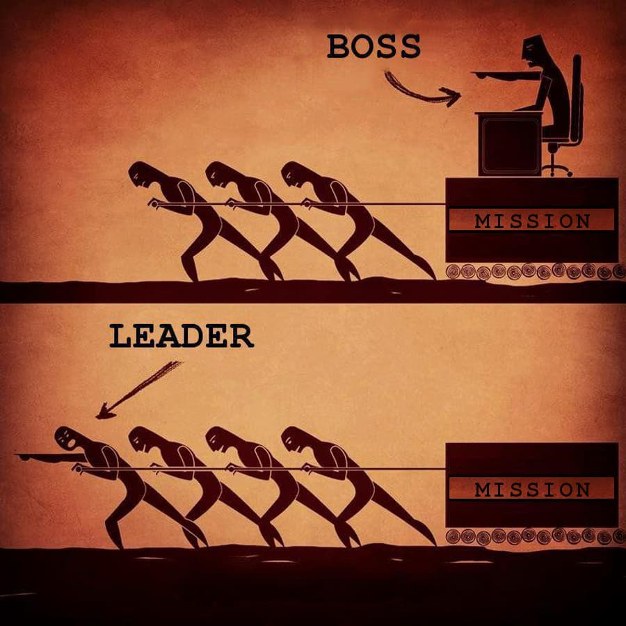

牛人也有虚假同感偏差
王福强
有个概念叫“虚假同感偏差”， 简单来说就是每个人都觉得自己怎么样，别人也应该怎么样， 其实大错特错。
今天我想说说“牛人”们（大牛们）的虚假同感偏差，也算是垂直深入一把吧~
早上跟熊老板聊天，谈到毛哥的时候， 熊老板说，毛哥经常跟他提的一句话是“如果有五个我，这些事儿会怎么怎么样”，是啊，要是所有人都在每一个事情上专业高效， 那就不用那么多组织和管理上的消耗和磨合了，可是现实却是，层次和梯队， 永远有领导者，永远有跟随者，也永远有管理者：

我们经常说“大树底下不长草”，实际上就是说很多专业上很牛的人周围很难集聚更多的牛人，甚至average都很难， 原因就在于很多牛人有专业能力上的执念， 这种执念适合做领导者，但不适合做管理者，管理者要能感受比自己弱的人的感受， 顾及大家的感受，然后才能集聚人（当然，利益和感情更是基础）。
一个人的能力终归是有限的， 要扩展自己的能力，就一定得集聚一群人一起（这也就是为什么要创业， 找人排在第一位）， 有了这群人怎么组织好大家一起朝一个方向走，拿到一个人拿不到的结果，这个是一个组织者和管理者的核心指责。
小到程序架构，大到公司治理， 概莫如是。
遥想当年还在大连带着小崔和大鹏两个小兄弟写代码的日子，我把程序框架写完，就可以交给他们俩去充实“枝叶”了，微软当年搞个PM(ProgramManager)，大概也就干这活儿吧 ；）
从技术选型上， 宁愿选择大众都知道，都愿意去学习的技术，也别执拗于技术优秀不优秀， 技术优秀往往流于小众而应用场景有限，不是说没有价值，而是大部分企业的应用场景需要的都是简单的规模化生产。我自己玩scala，玩vert.x，但从来不会要求别人也玩，反而在公司的项目工程上，越简单越大众的技术越好，原因即此，你能组织一群平凡的普通人做成一件大事， 那你才牛。自己再牛，浑身是铁又能撵几颗钉呢？
有些公司的CEO也会经常流露出对基层和中层的不满意（包括我也经常这样，要不当年怎么会被某HR给予“智力歧视症”的美誉呢，死性不改），实际上， CEO最应该不满意的永远是自己，如果属下真的达到CEO要的预期，那么这些属下也差不多自己飞了，否则干嘛你是CEO他是属下？ 层级，是现实的沉淀，接受这个沉淀，才能定心地组织生产。
早上起来twitter上看到的这句话我觉得说的挺好：
“虽然牛人可能随便抄起个什么家伙就能把事情做好，但是这只有他可以。如果一套装备能让一个普通水平的人接近牛人一般水平的工作效果，那这个装备很有价值啊，能够让业务水平扩展”
是啊， 不是人人都能成为牛人，既然这样，那么牛人不妨通过工具和系统来支撑普通人拿到牛人才能拿到的结果，不是更有价值，更有成就感嘛？
「为AI疯狂」星球上，扶墙老师正在和朋友们讨论有趣的AI话题，你要不要⼀起来呀？^-^
这里
- 不但有及时新鲜的AI资讯和深度探讨
- 还分享AI工具、产品方法和商业机会
- 更有原价1000多的付费内容(近500分钟)等着你，加入星球(https://t.zsxq.com/0dI3ZA0sL) 即可免费领取!